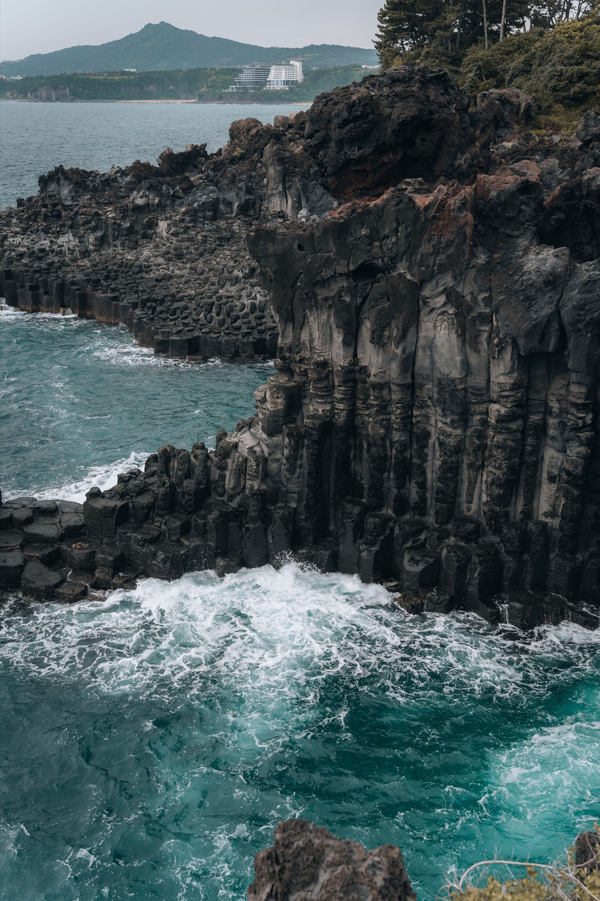
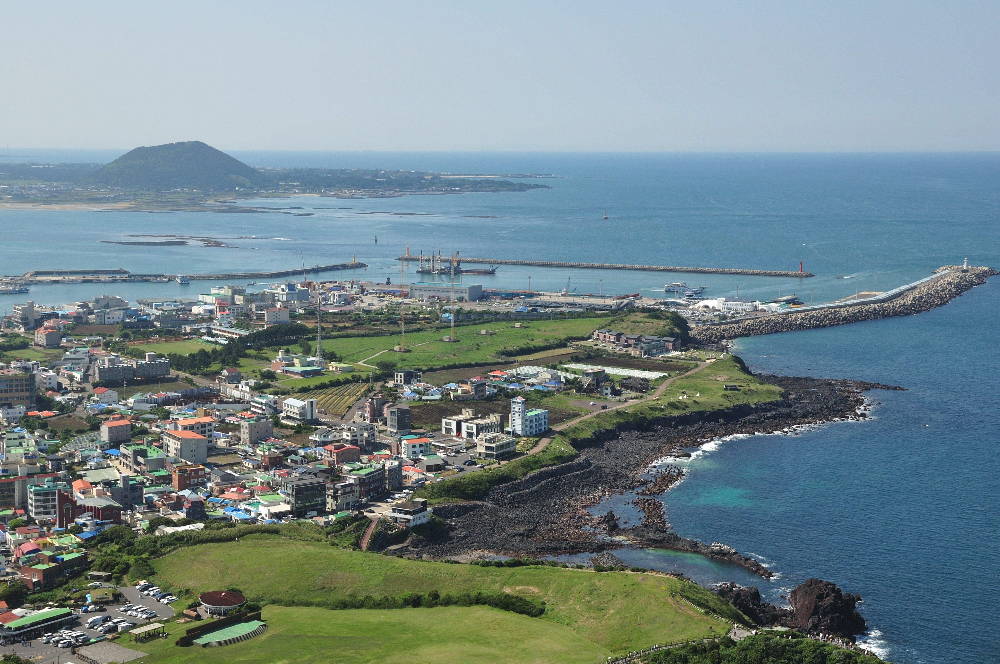

제주도 소개
제주도는 푸른 바다와 독특한 화산 지형, 곳곳에 자리한 오름이 어우러져 다채로운 자연을 만날 수 있는 섬입니다.

제주도에서 하고 싶은 일
- 성산일출봉에서 일출 보기
- 해안도로 드라이브하기
- 오름 산책하기
- 제주 음식 맛보기
- 바닷가에서 휴식하기
여행 사진


제주도의 소리
잔잔한 파도와 바람이 어우러진 제주 바다의 소리를 들으며 여행의 분위기를 느껴 보세요.
제주도 여행 영상
제주도의 바다와 오름을 따라 이동하며 만나는 여행 풍경을 영상으로 감상해 보세요.
추천 여행 일정
- 아침에 성산일출봉 방문
- 점심에 제주 향토 음식 체험
- 오후에 해안도로 드라이브
- 저녁에 바닷가 산책